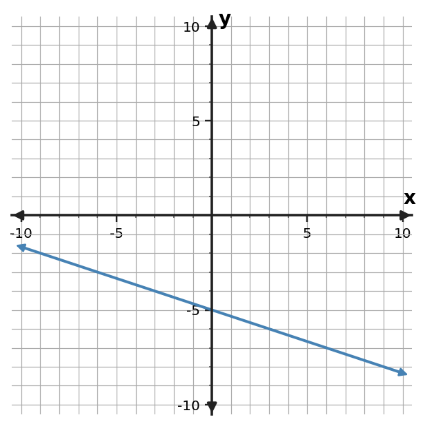

1. Relationship A is $y=2x-1$. Relationship B is shown in the table. Compare their rates of change and starting values.
| $x$ | $B: y$ |
|---|---|
| $0$ | $-7$ |
| $2$ | $-1$ |
| $4$ | $5$ |
1. Relationship A is $y=2x-1$. Relationship B is shown in the table. Compare their rates of change and starting values.
| $x$ | $B: y$ |
|---|---|
| $0$ | $-7$ |
| $2$ | $-1$ |
| $4$ | $5$ |
2. The graphed line is Relationship A. Relationship C is $y=2x+1$. Which has the greater rate of change? Compare their starting values as well.

3. Compare the two linear relationships. Use rate and starting value rather than the size of one displayed output.
| $A: x$ | $A: y$ |
|---|---|
| $0$ | $-7$ |
| $2$ | $-5$ |
| $4$ | $-3$ |
| $B: x$ | $B: y$ |
|---|---|
| $0$ | $-3$ |
| $2$ | $5$ |
| $4$ | $13$ |
4. Plan A starts at 40 dollars and gains 8 dollars per week. Plan B starts at 72 dollars and gains 5 dollars per week. Compare the rates and starting values. Which feature answers “changes faster,” and which answers “starts larger”?
5. At input $x=5$, Relationship A has output 50 and Relationship B has output 34. A student says the relationship with the larger output at this one input must always have the greater rate of change. Critique the claim and state what evidence is needed.
6. For Relationship A, $y=2x+3$, and Relationship B, $y=3x-1$, find the input where their outputs are equal and identify which relationship has the greater rate of change.